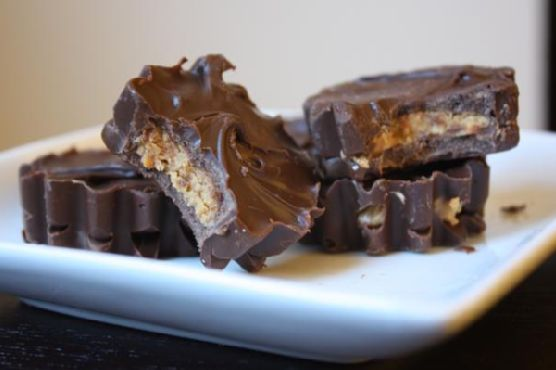
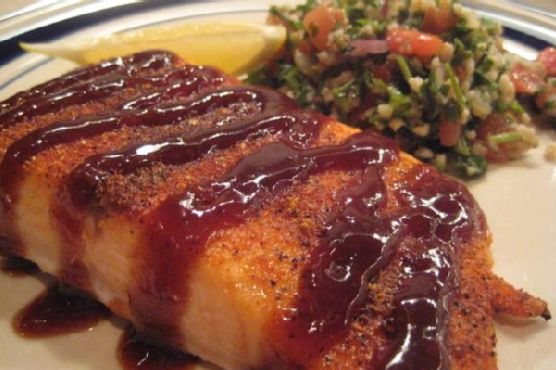
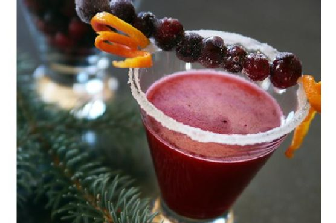

Currently Featured Items
Homemade Reeses Peanut Butter Cups

Ingredients:
(30)
- 3 tbsps butter
- ½ cup graham cracker crumbs
- 2 cups milk chocolate chips
- 6 tbsps peanut butter
- 1 cup powdered sugar
- 2 cups semi-sweet chocolate chips
Equipment:
- muffin liners
- microwave
- blender
- bowl
- frying pan
Instructions:
- Mix 1 cup semi-sweet and 1 cup milk chocolate chips in a microwavable bowl and melt in the microwave using 30 second intervals
- Grease pan generously with shortening (you can use the daisy pan I used or cupcake liners to get that crinkled effect around the edges)
- Fill cavities up 1/3 of the way with the melted chocolate and place in freezer to chill for about 5 minutes
- Prepare peanut butter filling by first melting peanut butter and butter together for about 20 seconds in the microwave
- Mix melted peanut butter and butter with sugar and graham cracker crumbs. I had left my mixer at home so I just used my hands for this part (if the filling ends up being too crumbly, try adding more melted butter and peanut butter)
- Remove pan from freezer and spoon peanut butter mixture onto each chocolate layer, making sure not to fill it up to the edges so that your top layer of chocolate can drip down and form the sides
- Mix and melt remaining chocolate chips and pour over the peanut butter so that it fills in the gaps on the sides and is even on top
- Refrigerate for about 30 minutes before serving/gorging
Spice-Rubbed Lemon Barbecue Salmon

Ingredients:
(2 servings)
- 2 tsps barbecue sauce
- 2 Tbsps barbecue seasoning
- 1 tsp hoisin sauce
- 2 tsps honey
- 1 lemon
- 12 ouncedry salmon fillets
- some sea salt
Equipment:
- baking sheet
- broiler
- bowl
- aluminum foil
Instructions:
- Place the salmon fillets on a greased, foil-lined baking sheet.
- Rub the top of the salmon with the barbecue seasoning. Let sit for 10 minutes while you preheat the broiler.
- Place the baking sheet 4" - 6" from the heating element and broil for 6 - 8 minutes, until cooked through.
- Remove from the broiler and let sit 5 minutes.
- Combine the sauce ingredients (barbecue sauce, hoisin sauce, honey and zest of 1/2 lemon) in a small bowl.
- Spoon the sauce into a small ziplock bag and squeeze down to the corner of the bag. Cut off a very small portion of the corner of the bag and squeeze the sauce generously over the salmon.
- Serve with a lemon wedge from the other half of the lemon.
Cranberry Margarita

Ingredients:
(6 servings)
- 16 ounces fresh cranberries
- 3 ounces grand marnier
- 1 cup orange juice
- some light rice syrup
- 1 cup sugar
- 9 ounce tequila
Equipment:
- wax paper
- sauce pan
- blender
- skewers
Instructions:
- In a saucepan over medium heat, melt the cup of sugar in the orange juice. Add the cranberries, reserving some for the skewers, and cook over low heat for 10 minutes. Set aside and let it cool. Blend cranberries in a blender, then strain to make the puree
- In a shaker add crushed ice, 1 1/2 ounces of tequila, 1/2 ounce of Grand Marnier, 2 ounces of cranberry puree and shake to mix.
- Skewer several cranberries onto 10 skewer sticks but leave enough skewer exposed on one end. Lightly brush each cranberry skewer with Karo syrup and then sprinkle extra sugar over the cranberry skewers. Place the cranberry swizzle sticks on wax paper and place in the freezer to set.
- Pour drink into a sugar rimmed martini glass. Add a cranberry swizzle stick for garnish.